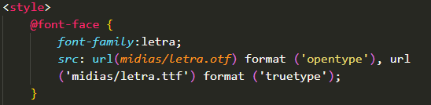

Trabalhando com fontes
Tipos de medidas
Medidas absolutas
- Centímetros = cm
- Milímetros = mm
- Polegadas = in
- Pixel = px
- Ponto = pt
- Paica = pc
Medidas relativas
- em = tamanho atual da fonte
- ex = altura X de uma fonte
- r.e.m = altura relativo ao ruth que está configurada pelo body
- viewwidth = largura da viewport *Largura da sua tela
- viewheight = altura da viewport *Altura da sua tela
- % = porcentagem
- weight = peso
- width = largura
- height = altura
Família de fontes
-
font-weight: A forma (bold) seria uma variação de peso ou grossura ou no mais popular: negrito.
Exemplo:
-
font-style: A forma seria o estilo da escrita: itálico e afins.
Exemplo:
-
text-decoration: A forma que seria feita a decoração da escrita: sublinhado
Exemplo:
Adicionando fontes externas do Google fonts
Para adicionarmos uma fonte, devemos primeiro importar ela para o nosso código.
Exemplo:
Alguns exemplo de fontes diferenciadas seria também no Google fonts. Para cada fonte que inseriamos, devemos usar um @import no começo do style
Adicionando fontes externas local
Para adicionarmos uma fonte externa, devemos baixar a fonte e criar um font-face na página de
estilo do css. Irá ficar da seguinte maneira:
